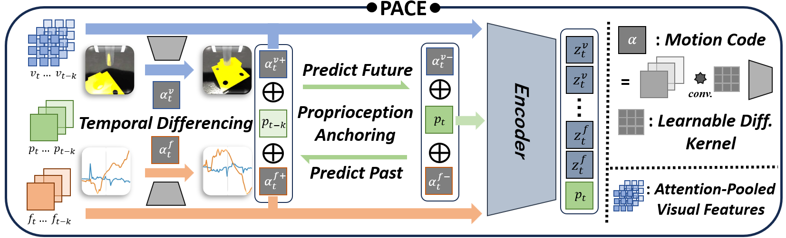
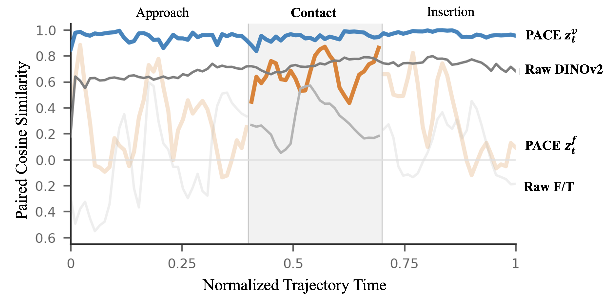

Zero-sum temporal kernels
Separate learnable kernels extract visual and force motion codes while suppressing constant appearance and sensor offsets.
arXiv · September 2026
PACE · Proprioception-Anchored Cross-modal Encoder
Why PACE?
Contact-rich assembly requires submillimeter spatial accuracy and reliable interpretation of small forces during sustained contact. Simulation provides scalable training, but visual appearance and force/torque measurements differ systematically between simulation and hardware.
PACE uses a comparatively consistent signal—joint proprioception—to supervise temporal visual and F/T representations. By predicting proprioceptive state transitions, the encoder is encouraged to suppress static domain-specific factors while retaining task-relevant motion cues. Policies trained on the frozen representation deploy on hardware without real-world fine-tuning or object-pose tracking.
Method
Two modality-specific pathways extract motion codes and learn task-relevant, complementary representations before policy training begins.
Simulation-only data
For each task, parallel simulation rollouts record dual-camera RGB, wrist F/T, proprioception, actions, and engagement labels for encoder pretraining.

Separate learnable kernels extract visual and force motion codes while suppressing constant appearance and sensor offsets.
Forward prediction and backward cycle consistency tie multimodal motion codes to proprioceptive state transitions.
Spatial alignment, contact engagement, and masked reconstruction preserve task information across both streams.
An asymmetric actor–critic learns on frozen PACE features, with conventional domain randomization covering physical variation.
Evaluation
The benchmark spans fine visual alignment, meshing, rotational mismatch, and force-sensitive engagement with sloped geometry.
A 16-mm peg with approximately 0.1-mm radial clearance, emphasizing fine visual alignment.
A 30-mm gear meshed with adjacent fixed gears, requiring contact-sensitive translational alignment.
A square plug requiring both planar and yaw alignment throughout insertion.
A knob and sloped socket whose contact geometry increases reliance on F/T feedback.
Results
PACE retains high success after zero-shot transfer while pose-based and learned-fusion baselines show substantially larger sim-to-real decreases.
| Method | Average real success ↑ | Sim-to-real decrease ↓ |
|---|---|---|
| Pose-Based PPO | 77.5% | 18.9 pp |
| AugInsert | 68.3% | 18.4 pp |
| No-Pretrain RL | 7.5% | 43.7 pp |
| PACE | 93.3% | 2.7 pp |
Representation analysis
Along matched simulation and hardware trajectories, PACE representations remain more closely aligned than unadapted DINOv2 and raw F/T features, particularly during contact.

Stress tests
On GearMesh, PACE maintains 90–100% success under lighting changes, a 2-cm camera shift, a 2-N F/T bias, and a changed background.
The average transfer decrease rises from 2.7 to 25.5 percentage points.
Average simulated success shows its largest stream-level decrease.
Masked reconstruction and proprioceptive anchoring support robust deployment.
Citation
@misc{wang2026pace,
title = {Proprioception-Anchored Cross-Modal Pretraining for Zero-Shot Sim-to-Real Contact-Rich Assembly},
author = {Wang, Yuhan and Chen, Yurou and Jiang, Hongye and Zhang, Gaojing and Lian, Wenzhao},
year = {2026},
eprint = {2609.07534},
archivePrefix = {arXiv},
primaryClass = {cs.RO},
doi = {10.48550/arXiv.2609.07534},
url = {https://arxiv.org/abs/2609.07534}
}